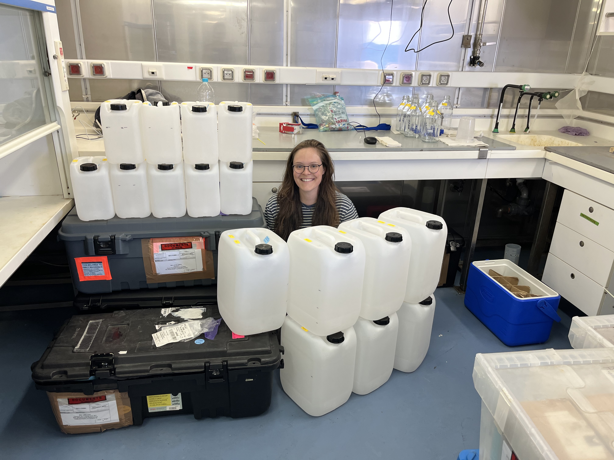

Microbial Phosphorus Acquisition
This work examines how microorganisms acquire, transform, and cycle phosphorus across aquatic environments, combining microbial ecology, analytical chemistry, and molecular approaches in laboratory and field-based studies.